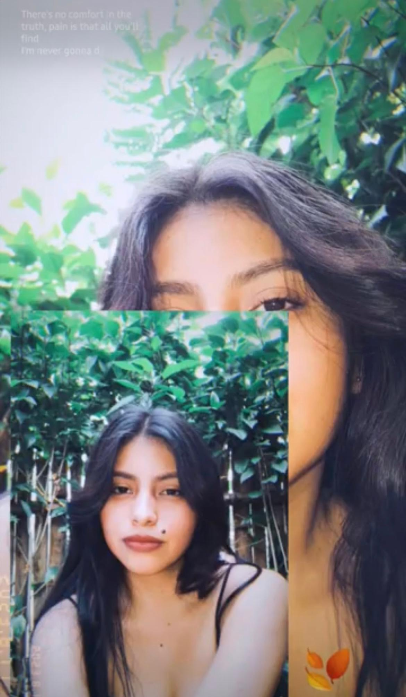
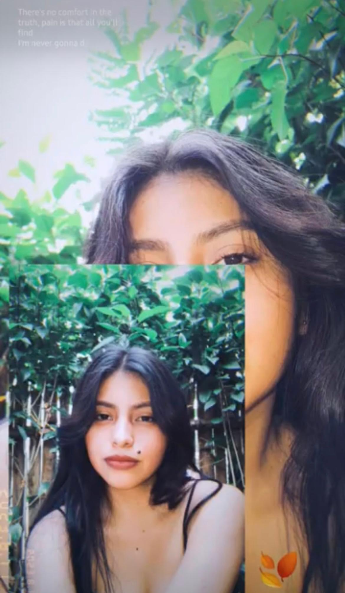
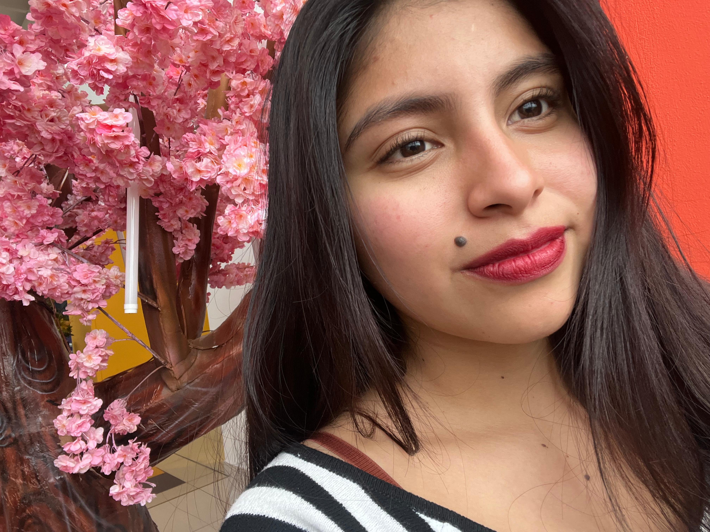
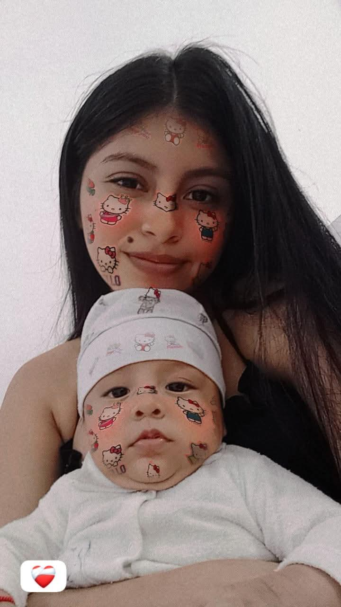
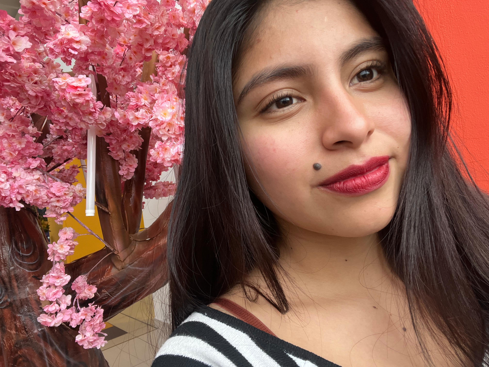
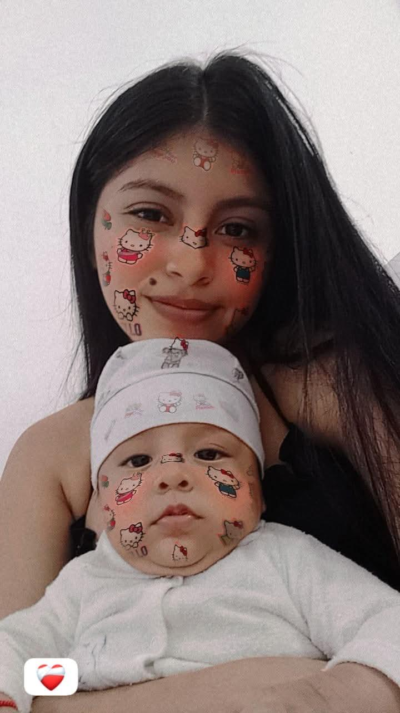

 




El día que te conocí ❤️
Hola...
No sé si esta carta llegue a ti, o si algún día la leas. Tal vez sea solo una forma de cerrar un ciclo, o quizás una puerta que se vuelve a abrir. No lo sé. Lo único que tengo claro, es que necesitaba escribirte.
Nos conocimos cuando más lo necesitaba, sin esperarlo. No eras solo una compañera de trabajo. Te volviste mi amiga, mi confidente, mi alegría en los días largos. Reíamos, compartíamos, y cada salida era un respiro para el alma. Nunca planeé sentir lo que sentí, simplemente sucedió. A veces, lo más hermoso llega sin avisar.
Sé que en tu corazón había alguien más. Lo entendí, aunque doliera. Pero aún así, nos dimos ese primer beso… y aunque fue solo un momento, para mí fue suficiente para entender que te había llegado a querer, de verdad. No sabíamos si funcionaría, pero ambos sabíamos que algo especial estaba pasando.
Tuve que dejar el trabajo, la universidad me llamaba. Pero aun así no me alejé. Te buscaba, te escribía, te llevaba detallitos… porque me importabas. Porque me importas. Pero un día, sin explicación, me bloqueaste de todo. Y me dolió. No por el hecho en sí, sino porque no entendía el porqué. A veces quisiera preguntártelo directamente, pero prefiero que, si algún día quieres explicarlo, lo hagas tú, a tu tiempo pero creo fue mi culpa siempre.
No te escribo para reprochar. Al contrario, te escribo porque valoro lo que fuiste para mí. Y aunque ahora ya no estemos en contacto, quiero que sepas que si alguna vez necesitas algo, estaré ahí. La amistad verdadera no desaparece con un bloqueo. Permanece, aunque sea en silencio.
Cuídate. Mucho. Eres joven, tienes metas, sueños, una vida hermosa por delante. Rodéate de personas que te sumen, no que te confundan. No busques amor en lugares donde solo hay vacío. No te entregues a quien no sabe valorarte, aunque sientas que lo amas. El amor no debería doler, ni confundirte. Si un día dudas, escucha a tu amiga, esa con la que vives, ella quiere lo mejor para ti.
Yo… solo quiero que seas feliz. Que crezcas, que cumplas todo lo que te propones. Me siento orgulloso de ti, aunque ya no estés a mi lado. Ojalá algún día podamos reencontrarnos, aunque sea como los amigos que alguna vez fuimos. Porque para mí, significaste mucho. Y eso no se borra.
Gracias por los recuerdos, por tu sonrisa, por tu cariño… aunque haya sido breve, fue real.
Con cariño David Cundulli